尾数法
看见加减法，要精算，而且选项的尾数不一样。
公式只算尾巴，拿尾巴对选项。判断正负，注意精度。0 减不够就借位，可以想成 10、20、30。一正一负时，先当成正数算尾数，再单独定正负；正负不一样，不能直接用尾数（12−5=7，但 2−5=−3）。小数里 1.0 就是 1，不要看成 0。
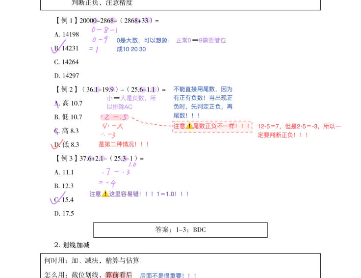
按高照 27 资料分析讲义整理。先看题干里给了什么、问什么，再进对应的考法。每一节是看见、公式、讲义里的一道例题。打印选 A4，即可另存为 PDF。
| 题干里看见 | 进这一节 |
|---|---|
| 加减法要精算，选项尾数不一样 | 尾数法 |
| 位数很多的加减，精算或估算 | 划线加减 |
| 五个及以上的数相加 | 高位叠加 |
| 多位数乘一位数 | 高位乘法 |
| 乘 1.5、1.1、0.9，或碰到常见百分数 | 特殊数字、百化分 |
| 因子接近某个整数，选项又很近 | 拆分法 |
| 两位数乘两位数 | 口诀法 |
| 除法估算，选项之间有差距 | 截位直除 |
| 结果带百分号、千分号，要看量级 | 包子法 |
| 分子分母要一起微调，选项差距小 | 等比修正 |
| 两个或四个分数比大小 | 分数比较 |
| 问上一年、上一期，给了增长量和增长率 | 基期：增长量除以增长率 |
| 问基期，给了现期和增长量 | 基期：现期减增长量 |
| 问基期，给了现期和增长率 | 基期：现期除以 1+r |
| 两个基期相加或相减 | 基期和差 |
| 求基期，但主体的数不够，材料给了比重 | 基期和比重结合 |
| 比较几个基期谁大，给了现期和增长量或增长率 | 基期比较 |
| 保持今年的增长量不变，问哪一年追上一个固定数 | 现期追赶：追固定数值 |
| 两个量都在变，问小的哪一年追上大的 | 现期追赶：小追大 |
| 增长量不变，问连续五年的和 | 五年加和 |
| 两个量都在变，问以后差多少 | 问差距 |
| 保持增长率不变，直接给了增长率 | 保持增长率：给增长率 |
| 保持增长率不变，只给了现期和增长量，或只给了现期和基期 | 保持增长率：不给增长率 |
| 问增长了多少、增加了多少，给了基期和增长率 | 增长量：基期乘增长率 |
| 问增长量，给了现期和基期 | 增长量：现期减基期 |
| 问年均增长量 | 年均增长量 |
| 问增长量，给了现期和增长率 | 增长量：现期和增长率 |
| 问增长量是多少倍，或柱状图谁的增量大 | 增长量比较 |
| 问增长贡献率，或增量的绝对值 | 增长量变型 |
| 增速、增幅比上年高几个百分点，或降幅扩大、收窄 | 增长率：百分点 |
| 给了现期和基期，求增长率 | 增长率：给具体值 |
| 问增速是否超过 10%、50%，或增长 100% 以上 | 特定增长率 |
| 隔一年，问增长率、倍数、基期或现期 | 间隔增长率 |
| 问年均增速 | 年均增长率 |
| 一个量是另外两个量相乘 | 乘积增长率 |
| 部分混成总体，问总体的增速 | 混合增长率 |
| 出现「占」、利润率、产销率、贡献率 | 比重 |
| 出现「均、每、单价、亩产」 | 平均数 |
| 是几倍、多几倍、超过几倍 | 倍数与比例 |
| 问非 A，或综合分析里「不能推出」 | A 与非 A、综合分析 |
前两章是入门。加减是后面乘除的底。想快，先把加减练熟。
看见加减法，要精算，而且选项的尾数不一样。
公式只算尾巴，拿尾巴对选项。判断正负，注意精度。0 减不够就借位，可以想成 10、20、30。一正一负时，先当成正数算尾数，再单独定正负；正负不一样，不能直接用尾数（12−5=7，但 2−5=−3）。小数里 1.0 就是 1，不要看成 0。

看见加减法，精算或估算，位数比较多。
公式截位划线，算前看后。后面不是不重要。位数差不变，写成 N+、N−。划在哪一位，看这两个数的特征。少借位，就是不要划出负数值。临界值（首位临界）最容易错在借位。
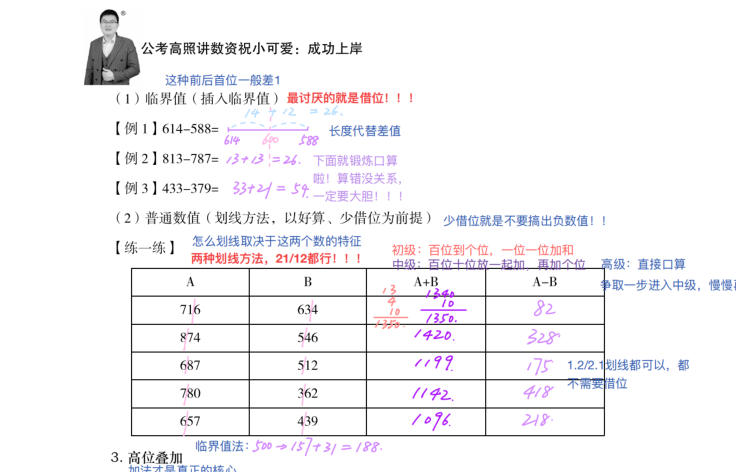
看见多个数加和，精算或估算。数据不少于 5 个时，优先这一招。
公式从高位加起，再叠加进位。两加一估：前两位精确相加，后面估算。计算时按 5 估，范围按 10 估。个数接近时，可以取平均数再乘个数。
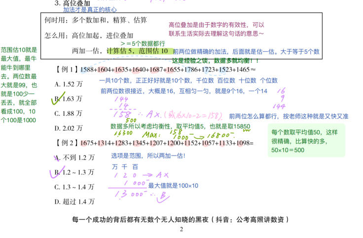
看见多位数乘一位数。
公式从高位乘起，最后把部分积叠加。按口算加法去写，不要从个位一步步乘。
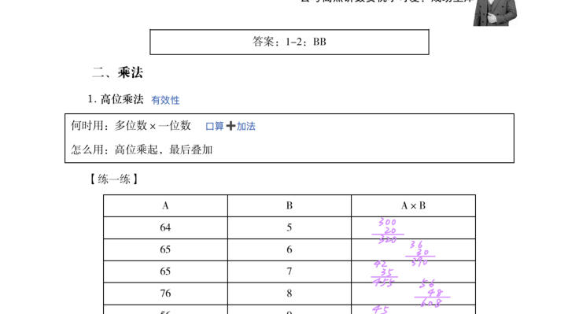
看见乘 1.5、1.1、0.9，或乘除里出现百化分里的常见百分数。
公式×1.5 等于这个数再加上它的一半。×1.1 等于错一位相加。×0.9 等于错一位相减。小数点跟着移一位。百分数先化成对应分数再乘除。CP 记忆：11 到 19 对 9、8、大7、小7、大6、小6、大5、中5、小5，交叉相乘是 100。
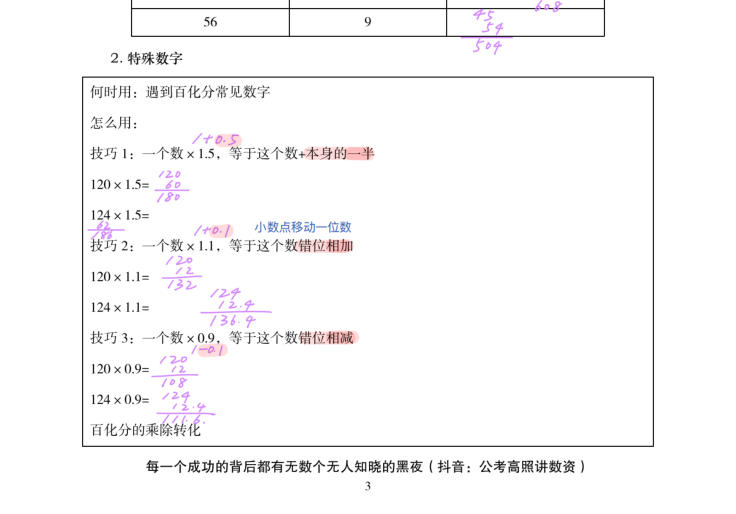
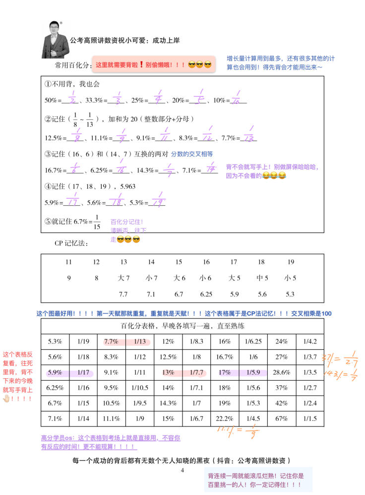
看见因子接近某个整数，或者选项差距很小。
公式先凑成整数，再把误差算回去。误差这一步要分清是估算还是精算。千分号先看清单位，1+4.8‰ 是加上千分之 4.8，不是百分之 4.8。
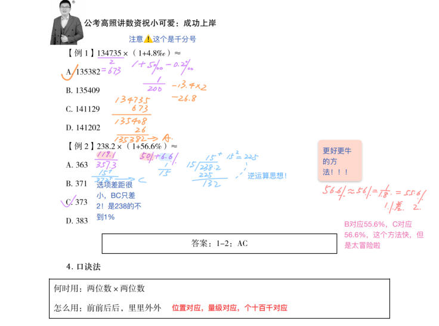
看见两位数乘两位数。
公式前前后后，里里外外。位置要对应，量级要对应，个十百千不要串。
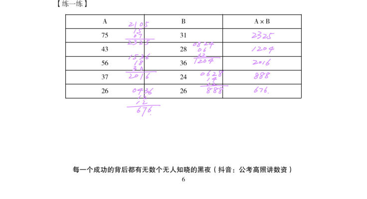
除法是考场上用得最多的一招。直除加百化分，再加后面的特定题型。
看见除法估算。一步除法只截分母，因为分子截了会错。多步除法分子分母都截，截完再约分。
公式从左边第一个非 0 开始截，下一位四舍五入。左边的 0 不算，0.1708 的第二位是 7，不是 0。截几位看选项差距：差距大截两位，首位不同，或首位相同但第二位差大于首位；差距小截三位，首位相同、第二位差小于等于首位（59 和 61 是临界）；差距极小截四位，前两位都相同。一步除法看首位或前两位就能排除。选项之间差大约 10 倍、100 倍，先看量级（小数点的位置）再计算。大于 10 的数才微调，尽量调 1，调大不调小。
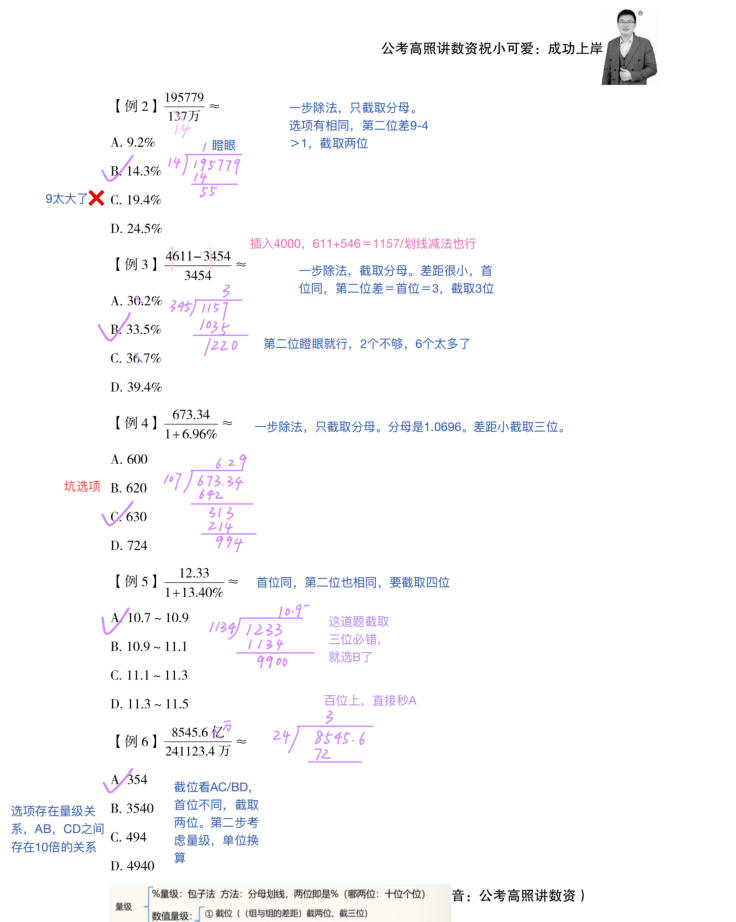
看见要考虑量级的除法，选项里出现百分号、千分号。
公式按选项，把分母的 10%、1%、0.1% 看成一个包子，看分子这笔钱能买几个。百分号量级：分母划线，十位和个位那两位就是百分号。分数接近 1，用化 1 法；接近 1/2，用化半法。选项藏着 10 倍时，先把不可能的量级划掉。
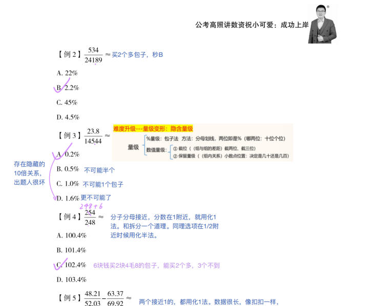
看见复杂除法，选项差距小。讲义写明后面基期和差、基期比例、分数比较也会用到。
公式分子、分母按同一比例变，分数值不变。变动的分子和分母之间是几倍，变动的那两个数字之间也是几倍。竖着看：按分子分母的倍数关系修正。横着看：分子和修正量的倍数，等于分母和修正量的倍数。
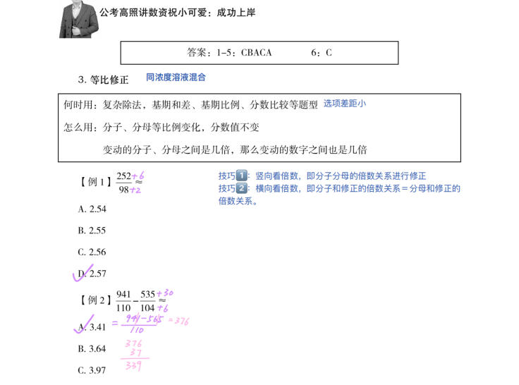
看见两个或多个分数比大小。
公式先看：分子大、分母小，分数一定大，一大一小直接比。同大同小（分子分母一起大或一起小）：竖着直接除，横着看倍数。四个分数，先抓分子最小或分母最大的那个，再竖着、横着看。横着看时，分子倍数大于分母倍数，分子大的分数更大。
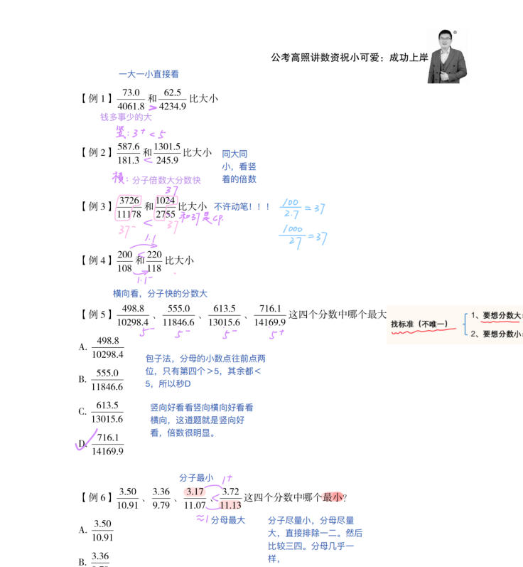
识别：问过去的量。作为对照的是基期，被拿来比较的是现期。增长量是增长的绝对量，增长率是相对量，也就是百分号。三个式子不用死背，先看材料给了什么。
公式基期 = 现期 − 增长量。基期 = 增长量 ÷ 增长率。基期 = 现期 ÷ (1+增长率)。同比看头，环比看尾：2026 年 5 月 20 日的同比是 2025 年 5 月 20 日，环比是 2026 年 5 月 19 日。
看见问基期，材料给的是增长量和增长率，没有直接给现期。
公式基期 = 增长量 ÷ 增长率。增长率先百化分。增长量和增长率同正同负。速算用截位直除、特殊数字。先定主体，再定位要算的那一个数。
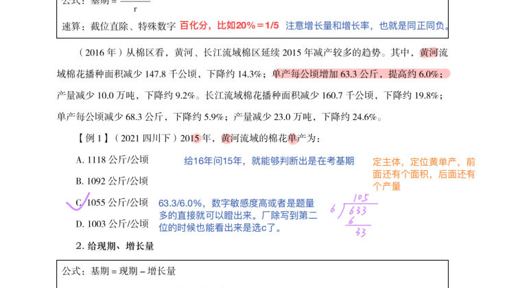
看见问基期，材料给了现期和增长量。
公式基期 = 现期 − 增长量。增长量有正有负，下降就是减一个负数。速算用尾数法、划线加减。累计材料要先还原到所求的那一段：从无到有的累计，早期是用期末累计减去中间各年。
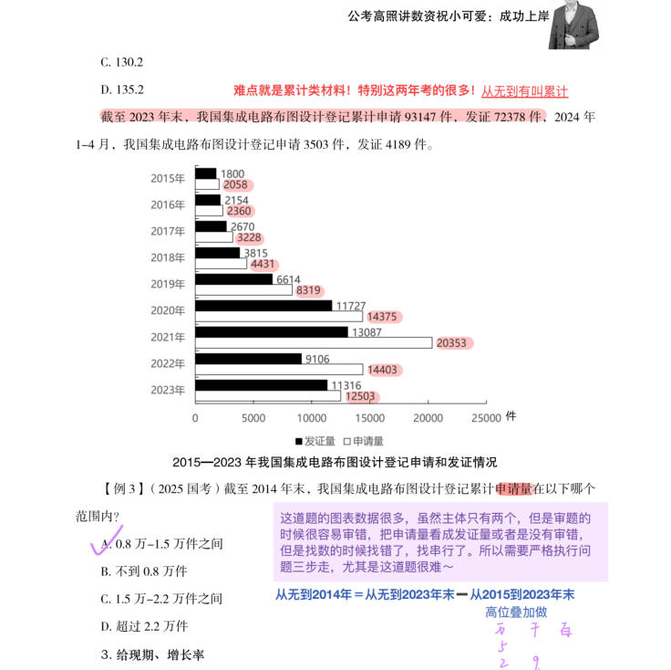
看见问某一个主体的基期，给了现期和增长率。
公式基期 = 现期 ÷ (1+增长率)。下降时增长率是负的，分母是 1 减下降率。先看问的是同比还是环比，材料里两个率都有时不要拿错。速算：截位直除、特殊数字。选项差距小就多截一位。
公式化除为乘：增长率的绝对值不超过 5% 时，现期 ÷ (1+r) ≈ 现期 × (1−r)，也就是现期减去现期乘 r；现期 ÷ (1−r) ≈ 现期 × (1+r)。下降时用加法。反例：4% 到 5% 之间，而且选项首位、第二位都相同，化除为乘误差过大，改回直除。r 为负时这一招更好用。
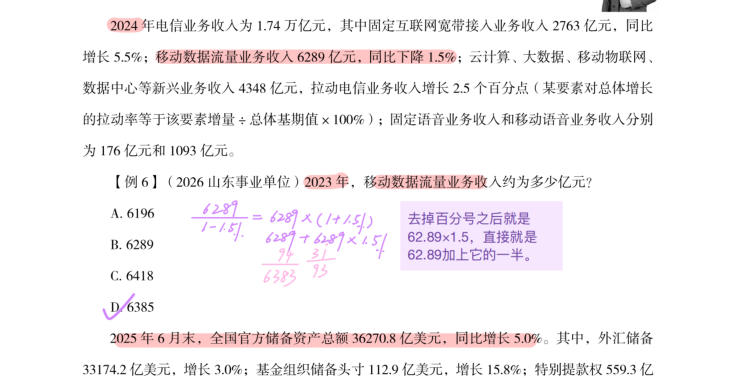
看见问两个基期相加，或一个基期减另一个基期。
公式A÷(1+a) ± B÷(1+b)。速算一：算一半，看一半，差距大时先算清一个再看另一个够不够拉开选项。速算二：等比修正，把分母化成同一个数，回到第二章的等比修正。时间口诀：三季度等于 1 到 9 月累计减去 1 到 6 月累计，不是表格里单独那一个月。
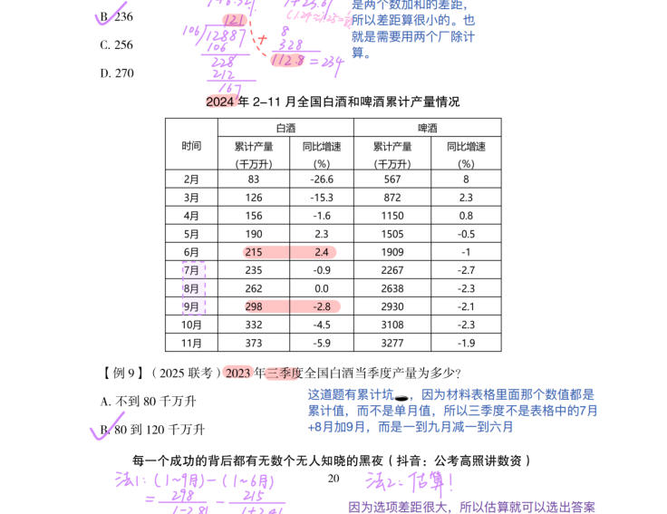
看见要算基期，但所求主体自己的现期数不够，材料是总分结构，给了比重。
公式给了所求主体的增长率：先把现期还原出来，再基期 = 现期 ÷ (1+增长率)。现期 = 总体现期 × 现期比重。不给所求主体的增长率：部分基期 = 总体基期 × 基期比重，总体基期 = 部分基期 ÷ 基期比重。比重的升降要用百分点先加回上一年。
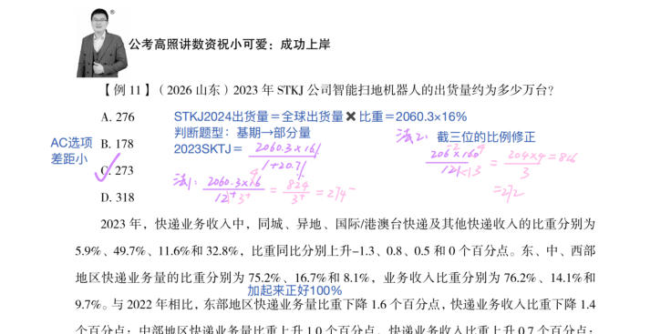
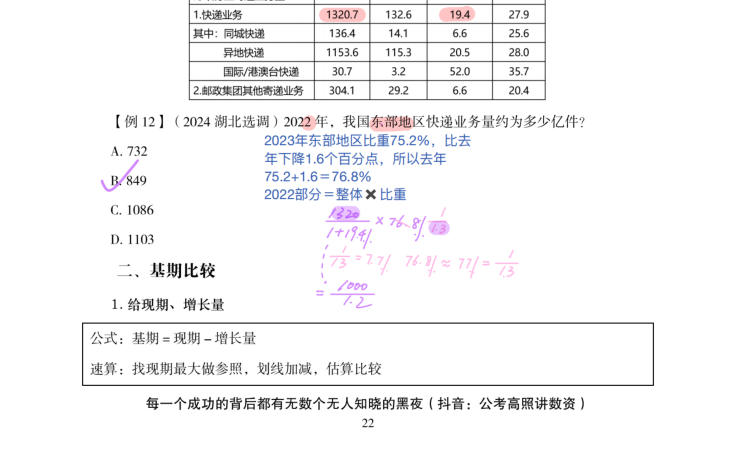
看见问过去谁更大、谁排第几，不是把每个基期都算出来。
公式给现期和增长量：基期 = 现期 − 增长量。找现期最大的当参照，再用划线加减、估算比较。负数增长量是下跌，基期反而更大。给现期和增长率：基期 = 现期 ÷ (1+r)。先分析，现期大、增长率小，基期大；分不出再用分数比较。
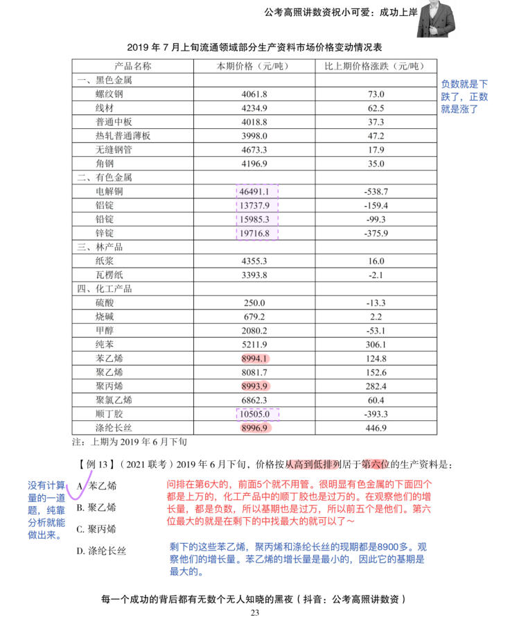
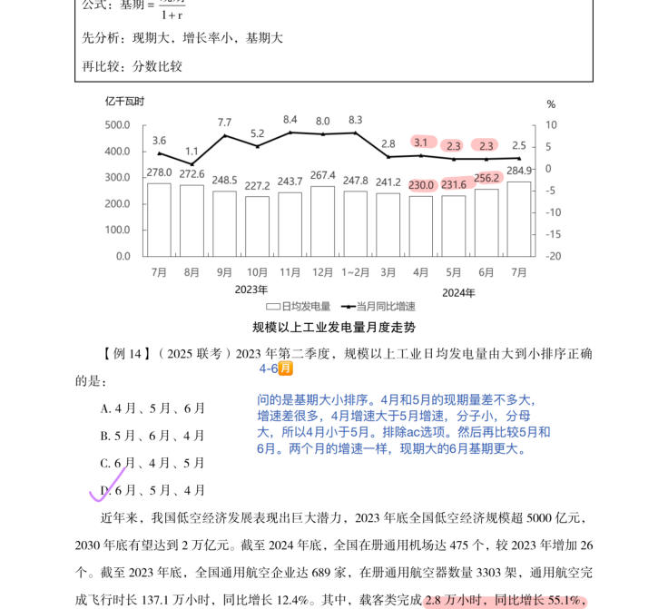
识别：给了基期量，求后面某个时期的量。增长次数 n 是年份差。
公式保持增长量不变：现期 = 基期 + 增长量 × n。保持增长率不变：现期 = 基期 × (1+r)，两年就是再乘一次 (1+r)，不是加两次同一个增长量。
看见一个量按固定的增长量往上走，问哪一年超过一个给定的数。
公式所需年数 = 差距 ÷ 增长量。除不尽就往大取整，取小了那一年还没追上。所求年份 = 基期年份 + 所需年数。增量要精算，临界值差 1 就会跨年。能代入选项就代入，少列方程。
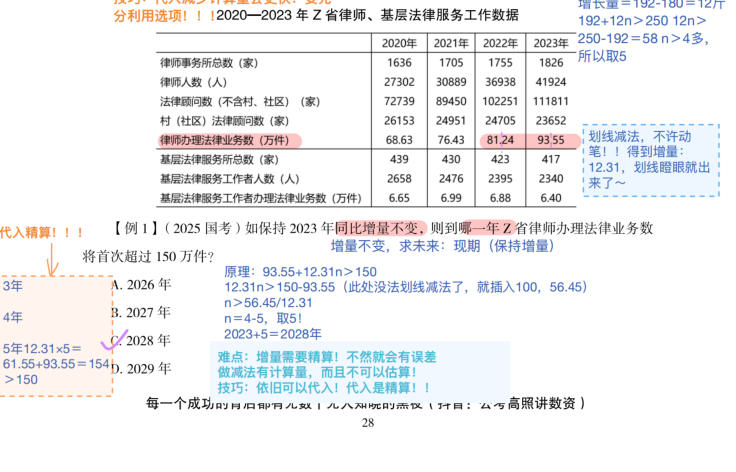
看见柱状图或表格里两个量都在变，问较小的哪一年第一次超过较大的。考场上把主体想成黑和白，黑要比白长得快。
公式先找基期差距，再用净增量去补。所需年数 = 差距 ÷ 增长量差，不为整就往大取整。所求年份 = 基期年份 + 所需年数。增长量本身必须精算。
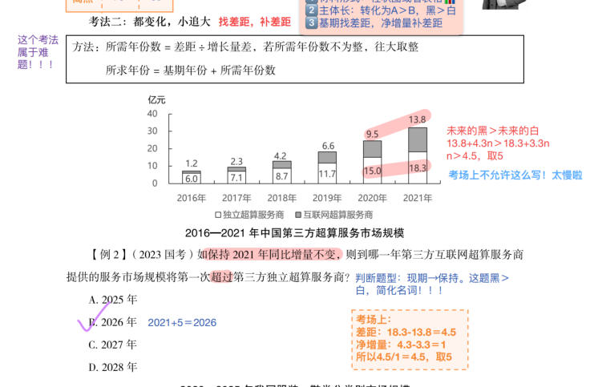
看见增长量不变，问连续五年、一个规划期的累计值。材料是我国的规划时，五年就是这一问。
公式是等差数列时，五年和 = 5 × 中间那一项。不是等差数列，先按等差求，再把误差加回去。
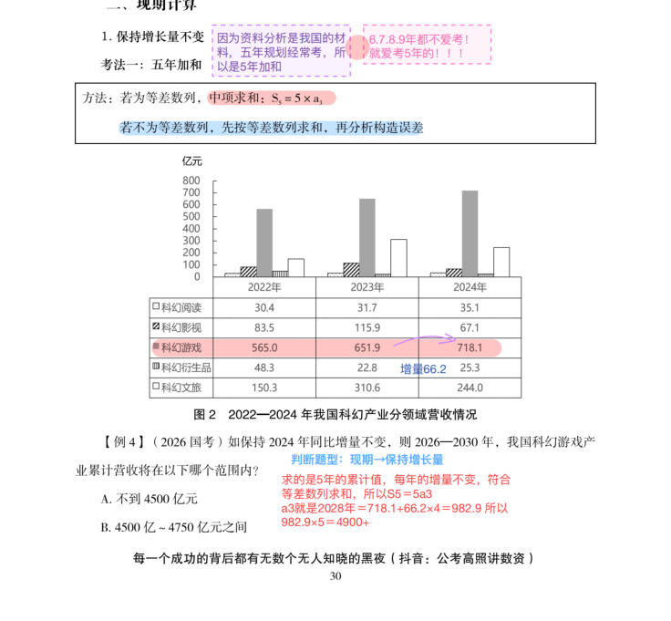
看见两个量都按自己的增量在变，问若干年后相差多少。可以想成小追大，但还没追上，问中间差多少。
公式差距 = 原始差 + 增长量差 × 年份差。增量大的一方，差距会按这个差每年拉开或缩小。选项很近时，增量必须精算。
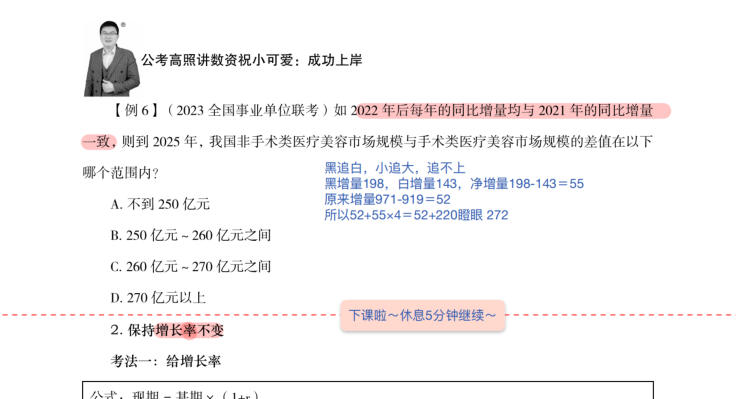
看见按今年的同比增速再往下算一年或几年，增长率直接给了。
公式现期 = 基期 × (1+r)。用特殊数字。选项差距大就估算，差距小就拆开精算：12.6% 先按 12.5% 即 1/8，再补 0.1%。r 是负数时，保持这个增长率，减少量会变小，比如从减 10 变成减 9，不要按原来的减少量照减。
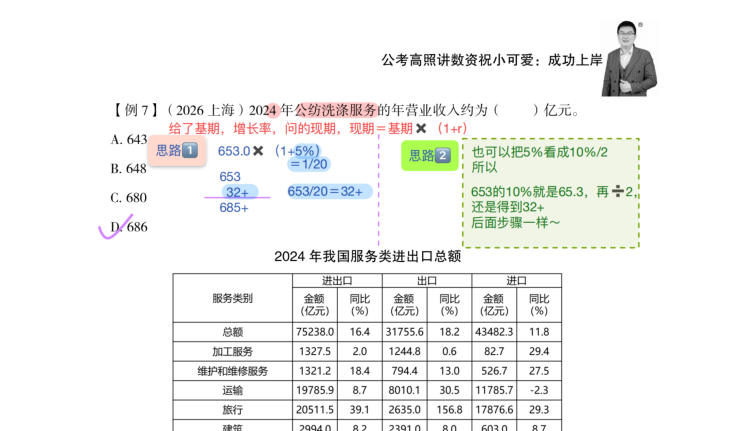
看见说按今年的增长趋势估以后，但没有直接写百分数。
公式给了现期和增长量：先按这份增量推下一年。r 为正时，下一年的增长量会变大，只加今年的增量会算小，结果偏小就选大的。给了现期和基期：倍数关系明显，就乘倍数，100 变 200，下一年 400，再下一年 800。倍数不明显，按增长量推，大精小估，也就是利滚利：大的部分精算，小的部分估算。正向算出具体值，反向用选项排除。部分占整体的比重不变时，部分的增长率等于整体的增长率。
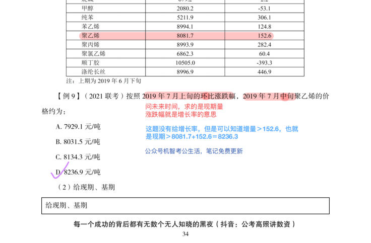
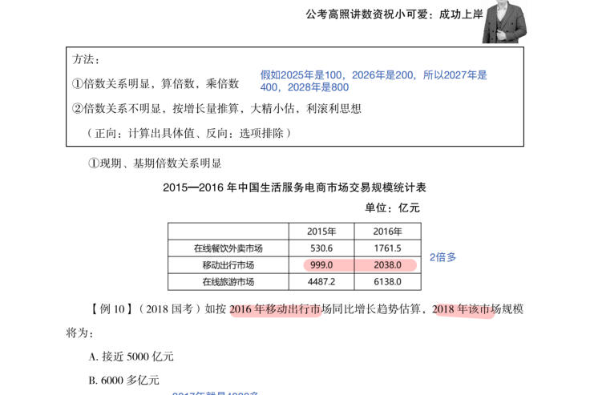
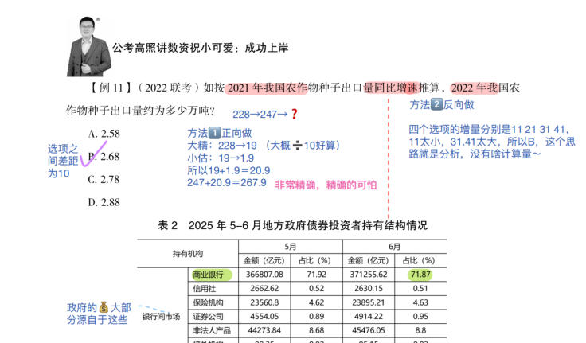
识别：问增长了多少，后面带单位，或「多多少」。增长量是绝对量。不同条件用不同式子。增长量为负时，下降越多，增长量越小，越接近 0 的负数越大。变化量看绝对值，下降 10 斤的变化量比增长 8 斤更大。
看见给了基期和增长率，问增长量。也有「每增长 1 个百分点，增长量是多少」。
公式增长量 = 基期 × 增长率。每增长 N 个百分点：先求基期，再乘 N%。基期没有直接给时，用现期 ÷ (1+r)。
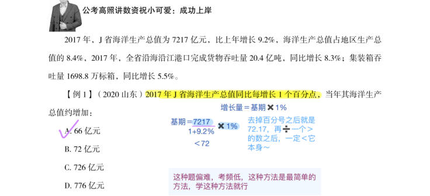
看见两个时期的具体数都有，问增加多少。
公式增长量 = 现期 − 基期。多个数加和：先把各部分的现期、基期各自相减再相加，或先加总再相减。特定增长量：问有多少年的增量大于某个数，用现期 − 基期和这个数比；基期 + 这个数和现期比时要注意方向。时间段里第一年如果材料有增长量，必须单独验证，没有数据不能默认不满足。
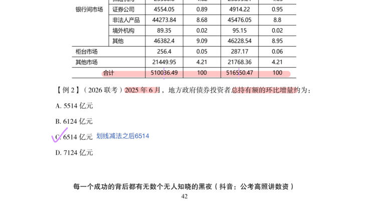
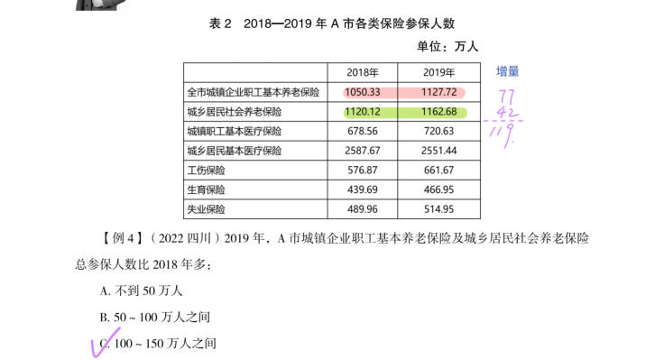
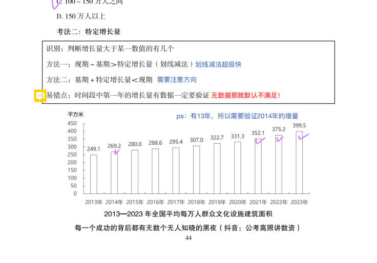
看见问平均每年增长多少。
公式年均增长量 = (现期 − 基期) ÷ 年份差。一般表述：除江苏考以外，不论前一年有没有给，基期都不往前推。江苏考：基期往前推一年。限定表述，比如五年规划、年均增长，年份差按 5，基期往前推一年。
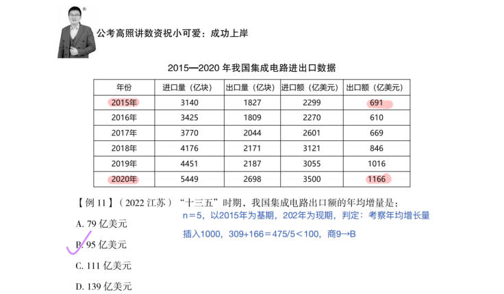
看见给了现期和增长率，问增长量。增长率为负就是减少量。
公式增长量 = 现期 ÷ (1+r) × r。把 |r| 写成 1/N 后，增长量 = 现期 ÷ (N+1)，减少量 = 现期 ÷ (N−1)。|r| 不超过 5% 而且选项差距大时，增长量 ≈ 现期 × r，这样估出来的增长量偏大，减少量偏小。误差大约是基期乘增长率的差值。
公式混合增长量：总体增长量 = 各部分增长量相加。有升有降，先抵消再算。增长量倍数：两个增长率相差不超过 10 个百分点、选项差距大时，A 的增长量 ÷ B 的增长量 ≈ (A÷B) × (a÷b)，也就是现期倍数乘增长率倍数。相差超过 10 个百分点，就分别百化分，算出增长量再比倍数。
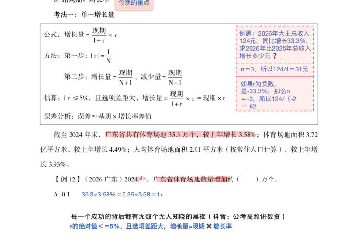
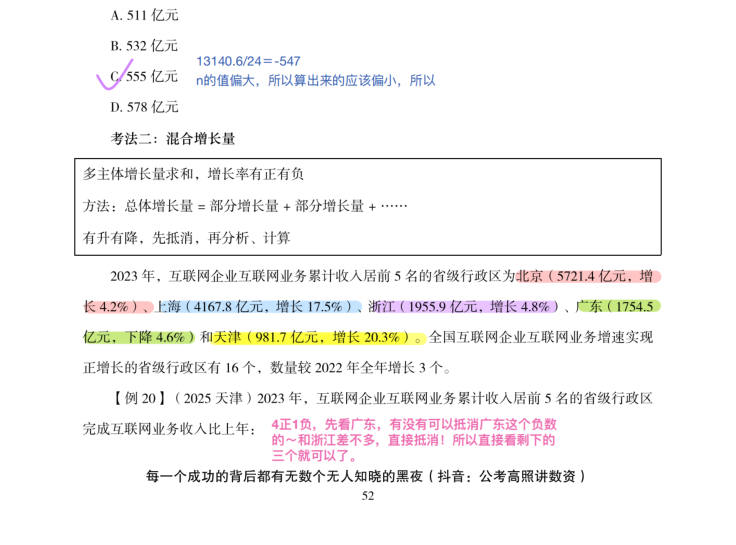
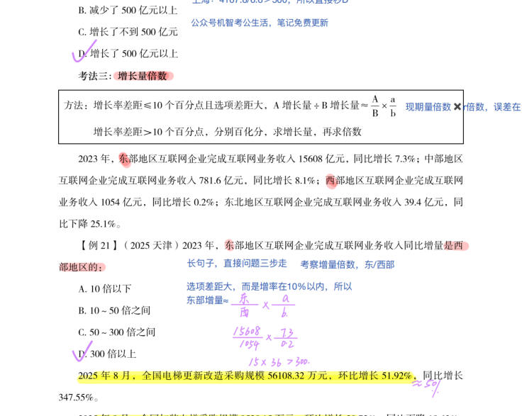
看见问哪一年增加最多，或增量的变化趋势，不要求算出每一个数。
公式给了现期和基期：增长量 = 现期 − 基期。柱状图看高度差，不看斜率。折线图看斜率。文字和表格就对比着排除。变化趋势的柱状图：先看正负，再看谁高谁矮，最后才看比例。横轴画在增量 0 的位置时，正负直接读出来，一般不用再算。
公式给了现期和增长率：现期大、增长率大，增长量大。一大一小，百化分求出增长量再比。现期倍数和增长率倍数差得明显时，看倍数大的那一边。
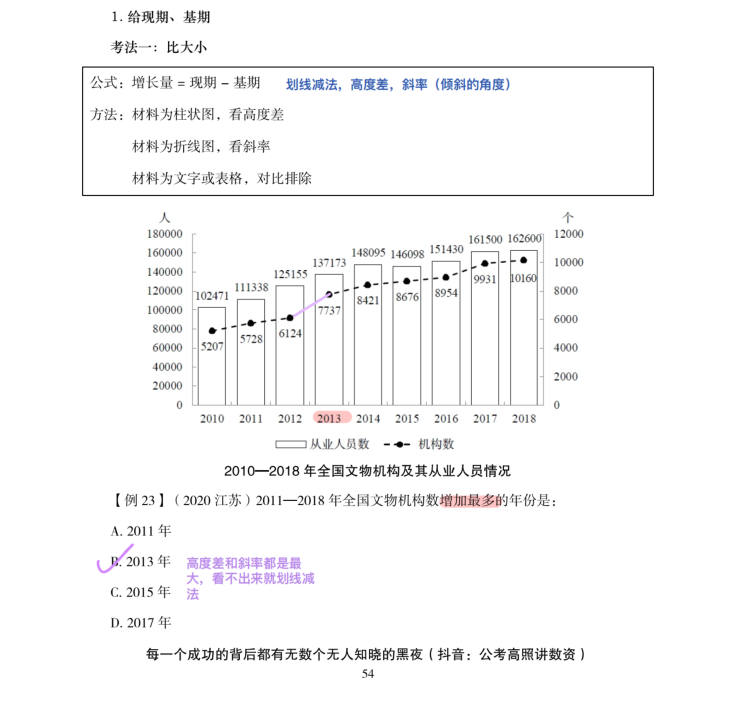
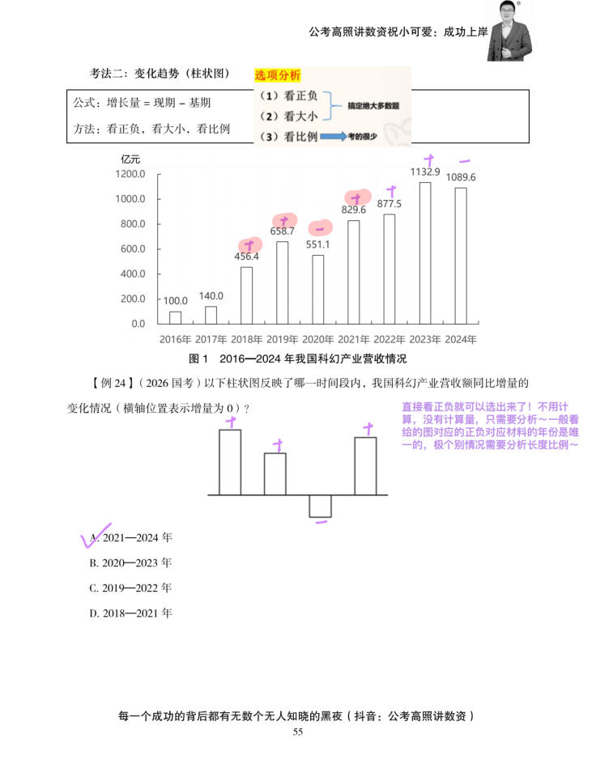
看见问谁的增长贡献率最大，或增量绝对值怎么排。
公式增长贡献率 = 部分增长量 ÷ 总体增长量。拉动增长率 = 部分增长量 ÷ 总体基期。总体相同的时候，比贡献率就是比部分增长量，括号里的单位已经是能直接比的增量，不要先换算。绝对值排序用淘汰：先让正的和正的比、负的和负的比，再拿两边的绝对值比。下降的那个，绝对值照样参加排序。
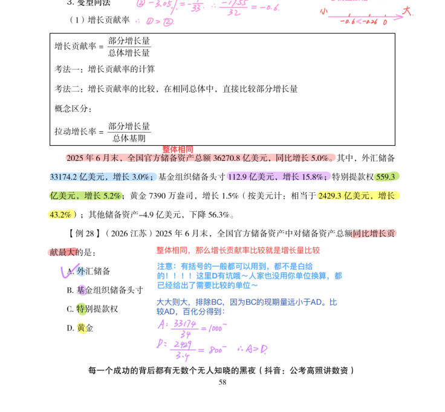
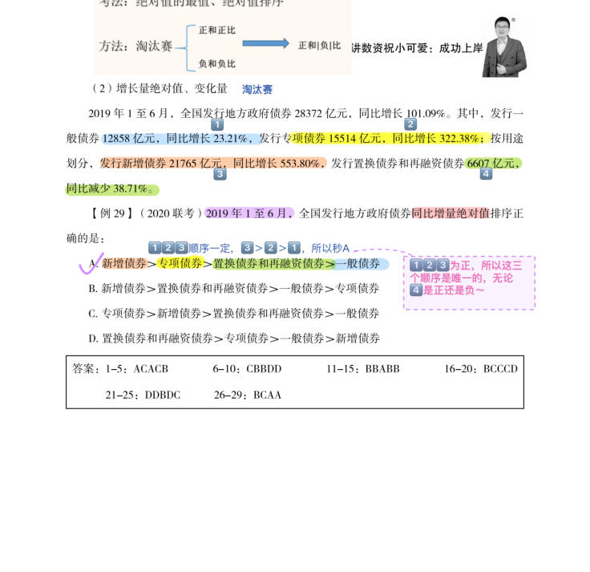
识别：问增长的比例，百分数、倍数。增长几倍就是增长率；是几倍 = 增长率 + 1。增长 1 倍是增长 100%，也就是是 2 倍。增长率 = 是几倍 − 1。
看见给了现期的增长率，又给了比上年高或低几个百分点，求上一年的增长率。降幅扩大、收窄也走这里。
公式先看加减，高减低加。再看规则：增速、增幅上升或下降，带着符号算。降幅扩大或收窄，先拿绝对值算降幅，再变回增长率，降幅本身是负的。口诀：增速是高减低加；降幅是绝对值的高减低加，绝对值前面还要加负号。变化幅度可以升也可以降，比的是绝对值。
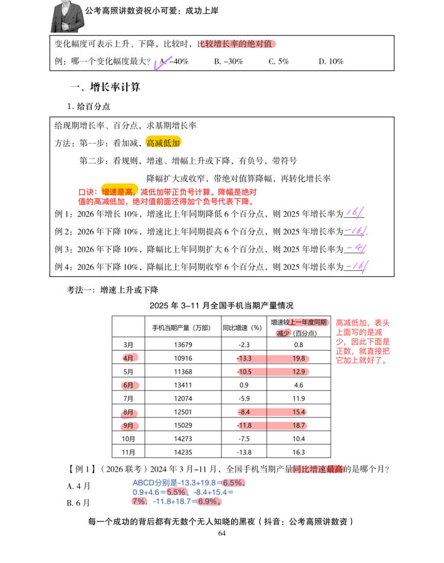
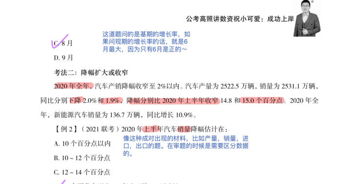
看见给了两个具体数，求增长率。
公式给现期和基期：增长率 = (现期 − 基期) ÷ 基期 = 现期 ÷ 基期 − 1。给现期和增长量：增长率 = 增长量 ÷ (现期 − 增长量)。给基期和增长量：增长率 = 增长量 ÷ 基期。速算用划线加减、截位直除。
看见问增速超过 10%、50%，或增长一倍、100% 以上，计算量很小，用倍数去卡。
公式给了现期和基期：增速超过 10%，现期要大于基期的 1.1 倍，错位相加。超过 50%，现期要大于基期的 1.5 倍，本身加一半。给了现期和增长量：增长率超过 n 成，就看 (n+1) 倍的增长量是否大于现期。增长 100% 以上，就是现期小于 2 倍增长量。时间段的首年要单独验证。
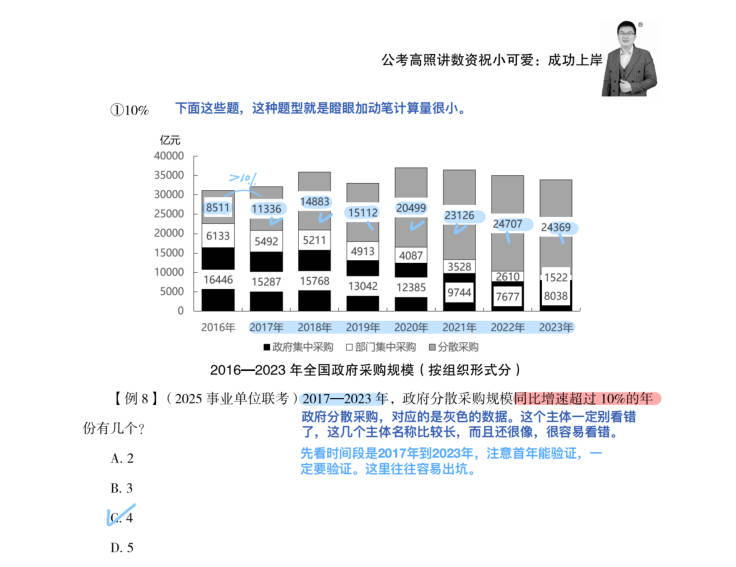
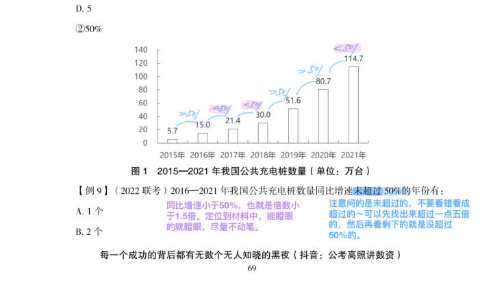
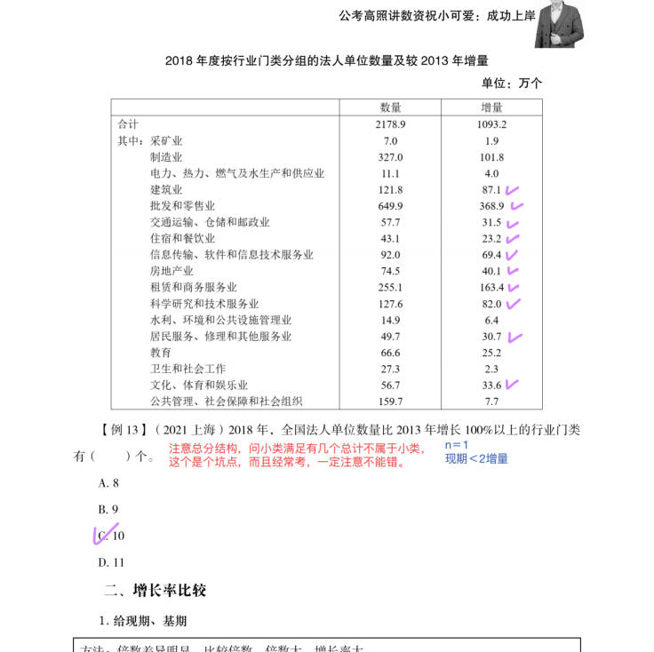
看见问谁增长得快，不要求把每个百分数算出来。
公式给了现期和基期：倍数差得明显，直接比倍数，倍数大的增长率大。不明显就看前三位，口算增长量。先抓增长量大、基期小的。再比增长量 ÷ 基期。增长量变小、基期变大，增长率变小。给了现期和增长量：比较增长量 ÷ 现期，结果越大增长率越大。这一步只能比较，不能拿来当增长率的具体值。
识别：隔一期。2026 年比 2024 年，中间空了一年。
看见问隔一年的增长率。
公式间隔增长率 = r1 + r2 + r1×r2。记成和加积。两个率的绝对值都小于 10%，而且选项至少差一个百分点时，乘积可以先忽略，10%×10% 才到 1%。一正一负时乘积更小。遇到特殊分数，化成小数再相乘，结合选项看。
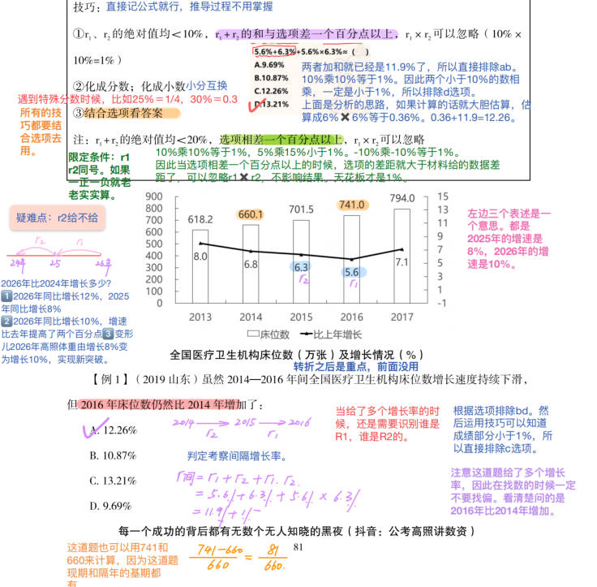
看见隔一年，问是几倍或多几倍。
公式先算间隔增长率。是几倍 = 间隔增长率 + 1。多几倍 = 间隔增长率。选项就是 1.3、1.5、1.7 这种倍数时，不要把间隔增长率本身当成倍数。
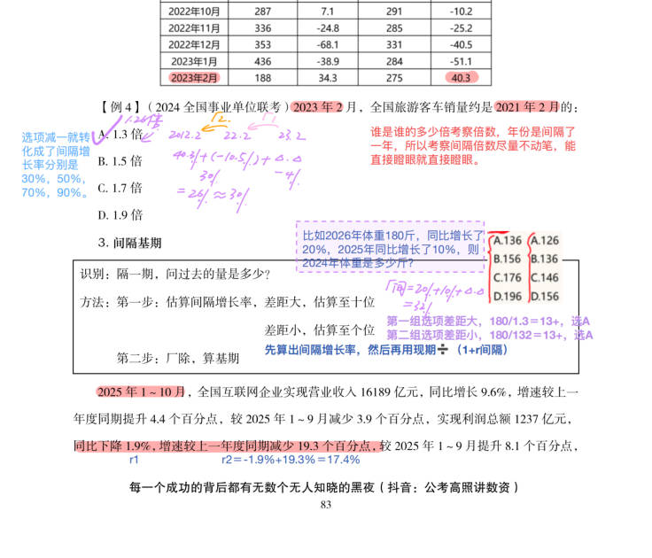
看见隔一年，问过去的量。
公式先估算间隔增长率。选项差距大，估到十位；差距小，估到个位。再拿现期除以 (1+间隔增长率)。这一步就是第三章的基期，只是增长率换成了隔一年的那个率。
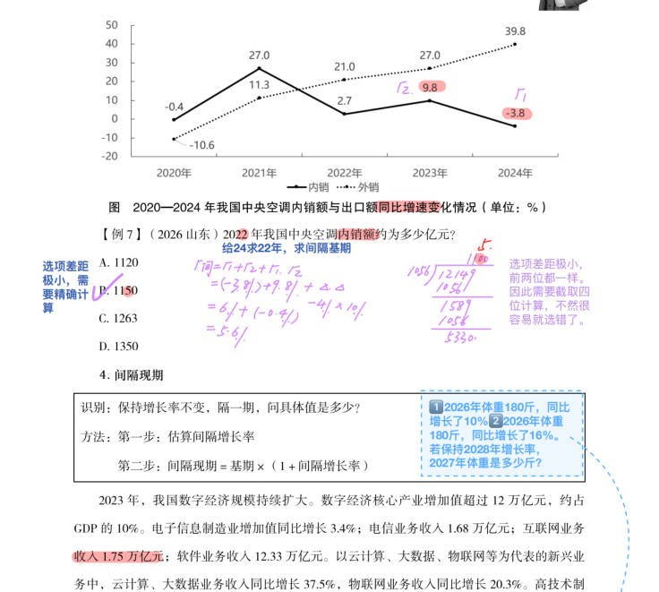
看见保持增长率不变，隔一年问以后的量。
公式先估间隔增长率。现期 = 基期 × (1+间隔增长率)。和第四章保持增长率不变是同一列式，这里的 r 用隔一年的率。
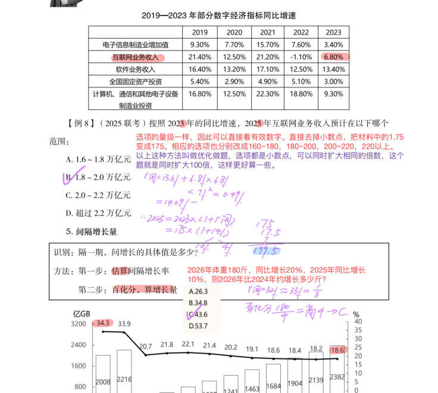
看见隔一年，问增长了多少。
公式先估间隔增长率，再按第五章百化分求增长量。选项差距大时，也可以先把两年的累计流量相减。
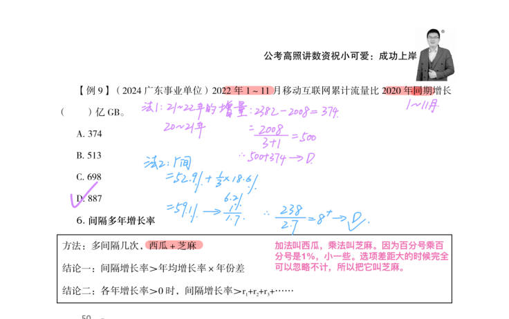
看见连续几年都在涨，问隔了多年的总增长率，和各年增长率加起来比。
公式隔了多年，加法是西瓜，乘法是芝麻。选项差距大时，百分号乘百分号可以先忽略。各年增长率都大于 0 时，间隔增长率大于各年增长率之和，也大于年均增长率乘年份差。
看见给了其中一年的增速和隔年的增速，反求另一年。也有同比套环比、同比套年底。
公式同比和同比：已知 r1 和间隔增长率，r2 = (间隔增长率 − r1) ÷ (1+r1)。间隔增长率大于 r1，r2 就是正的；小于 r1，r2 就是负的。已知 r1 和两年的平均增长率 r，先把间隔增长率写成 r+r+r×r，再求 r2。同比套环比、同比套年底：或者直接化成间隔增长率，或者先算基期和现期，再算增长率。
看见问平均每年增长百分之几。先看年份差是不是一样。
公式比较：年份差相同，比现期 ÷ 基期，总量增长率大的，年均增长率大。(1+年均增长率) 的年份差次方 = 现期 ÷ 基期。选项大部分在 10% 以内：先算总增长率，年均增长率小于总增长率 ÷ 年份差，再代入验证。选项大部分在 10% 及以上：从中间代入一个整十的数，用平方、立方去对。
看见问增长率，但主体自己的现期、基期不全，主体可以写成两个量相乘。这是材料考法，公式常常不印在材料里。
公式A = B×C 时，A 的增长率 = B 的增长率 + C 的增长率 + 两者的乘积。和第七章间隔增长率是同一个和加积。常见：总额 = 单价 × 数量，产量 = 单产 × 面积，部分 = 总体 × 比重，城镇收入 = 农村收入 × 城乡倍差。先判定谁是乘积，再决定求的是哪一个率。选项往往能少算一步。
识别：求增长率时数不全，主体能写成部分加总体。明显是部分加部分等于总体，就先想混合，不要先当乘积。固定搭配：进出口 = 进口 + 出口，全国 = 城镇 + 农村，全年 = 1 到 11 月 + 12 月，一季度 = 1 到 2 月 + 3 月。
看见两个部分合成一个总体，问总体的增速落在哪。
公式居中是反向排除：总体增长率在两个部分增长率之间。偏向看基期量，总体更靠近基期量大的那一边。线段法：部分和总体的增长率之差，与基期量成反比，离得近的那边基期量大。
看见居中不够，要算出总体或某个部分的增速。
公式线段法按距离和基期量成反比来列。三角杀：前两步把两个部分的基期量做差，第三步用混合量和这一差相除。反例：两个部分的增长率差得很大时，口诀、线段法、三角杀都要用基期量，不能拿现期量去估。
看见材料给的是顺差、逆差、盈余，或当月和累计，或三个以上的部分。
公式顺差 = 出口 − 进口，逆差反过来，盈余 = 收入 − 支出。当月增速高于累计增速，累计增速在上升；当月低于累计，累计增速在下降。多个部分：拆成两两混合，先混合基期量接近的，或先找基期量相等的那一对。
识别：谁占谁的比重。利润率、增长贡献率、亏损面、产销率、城镇化率都是比重。占是关键词。A 占 B，A÷B；A 中 B 的占比，B÷A。利润率在这里是利润 ÷ 收入。产销率是销量 ÷ 产量，产量做分母。拉动 = 部分增长量 ÷ 总体基期。
看见问现在的占比、比重差、饼图、部分或总体。
公式比重 = 部分 ÷ 总体。部分 = 总体 × 比重。总体 = 部分 ÷ 比重。同一总体里，比重差 = 部分差 ÷ 总体；不同总体，分开求再相减。判断比重超过某个数的有几个：总体 × 这个比重，再数有多少部分比它大。饼图先看部分和总体的 1/2、1/3、1/4，再看部分和部分是不是 2 倍、3 倍。比重连乘：A 占 B 为 m，B 占 C 为 n，A 占 C 为 m×n。给了部分、没给总体时，找另一个部分和它的占比，部分是几倍，比重就是几倍。
看见问的时间在材料之前，问的是占比。
公式给了现期和增长量：基期比重 = (部分 − 部分增长量) ÷ (总体 − 总体增长量)。给了现期和增长率：基期比重 = A÷B × (1+b)÷(1+a)。A、a 是部分的现期和增长率，B、b 是总体的。分子、分母先各自回到基期，基期 = 现期 ÷ (1+增长率)，见第三章。算之前看选项，唯一就直接选；差距大就约分，差距小就用第二章的等比修正。
看见问比重比上年上升还是下降，或上升了多少个百分点。
公式部分增速 a 大于总体增速 b，比重上升；a 小于 b，比重下降。比较时带着正负号。反过来，比重上升就能推出 a 大于 b。问上升或下降多少个百分点：两期比重差 = A÷B × (a−b)÷(1+a)。先看 a−b 定升降，A÷B 对算式影响大，1+a 只让结果多一点或少一点。问的是比重差，不是比重增长率。
识别：平均、每。单价、亩产量、单位企业利润。讲义开篇写明，有些公式和比重一样，形式非常相似。平均数 = 后 ÷ 前，总数 = 平均数 × 个数。基期平均数的列式和第十章基期比重相同，只是分子是总量、分母是份数。
看见问现在的平均数、谁的平均数大、平均数超过某个数的有几个。
公式后除以前。多个平均数比大小，用第二章的分数比较，先看量级。多个数求平均，凑整或高位叠加后再除。月均、日均这种双重平均，看除的是月还是日，谁好除先除谁。给了分子、没给分母，找另一个分子相同的平均数，分子是几倍，平均数就是几倍。
看见问上一年的平均数，或平均数比上年升了还是降了，或平均数的增长率。
公式给了增长量：基期平均数 = (分子 − 分子增长量) ÷ (分母 − 分母增长量)。给了增长率：基期平均数 = A÷B × (1+b)÷(1+a)，和基期比重同一列式。a 是分子增速，b 是分母增速。a 大于 b，平均数上升；a 小于 b，平均数下降。平均数增长量 = A÷B × (a−b)÷(1+a)。平均数增长率 = (a−b)÷(1+b)。
讲义开篇写明：倍数也是 A÷B，和比重、平均数的列式形式一样。先看问法里的「是」「多」「超过」。
看见是几倍、多几倍、超过几倍、比值。
公式A 是 B 的几倍，A÷B。A 比 B 多几倍，A÷B − 1。也可以说成 A 比 B 超出几倍。A 超过 B 的 N 倍，A÷B 大于 N，拿去和「是几倍」比，不要和「多几倍」混。选项差距大，截两位。
看见问上一年谁是谁的几倍。
公式基期倍数 = A÷B × (1+b)÷(1+a)，和第十章基期比重同一列式。先按选项差距截位除 A÷B，再看 (1+b)÷(1+a) 比 1 大还是小。选项唯一就直接选；不唯一再用约分或等比修正。
看见多年的倍数、比重或平均数混在一起，问整体是多少倍，或谁的增速最快。
公式讲义把混合比例写成浓度：混合之后仍居中，偏向溶液量大的一边。线段法里，比的量是这个比例的分母。增长率比的是溶液，比重比的是总体，平均数比的是人数。各年倍数差一截时，可以先按匀一匀估，再看基期量大的年份把整体往哪边拉。
看见问的是材料没单独给出的那一块：其余、非 A、另一部分。讲义称为指 A 打 B。
公式量：非 A = 总体 − A。时间上，上一年累计 = 今年累计 − 今年新增。率：总体 = A + 非 A，两个率按第九章混合。比例：非 A 的比重 = 1 − A 的比重。
看见「不能推出」「能够推出」，四个选项各问一件事。
公式不要从头算到尾。先看选项在问比重、平均数、增长量还是倍数，回到前面对应的那一章。人口这种几乎不变的数，截位要小心。增长率相同，增长量并不相同，要看基期谁大。